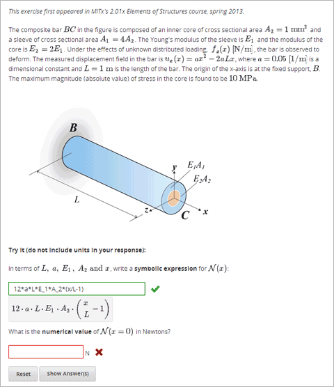

在数学表达式输入问题中,学习者输入代表数学表达式的文本.这个文本会在输入框下方被转化成符号表达式。和数值输入问题不同的是,数值输入问题仅仅能输入整数和一些常量，数学表达式输入问题可以包含未知的变量和更多更完整的符号表达式。
更多关于如何输入表达式的信息, 请查看 Math Response Formatting for Students.
对于你课程中的数学表达式输入问题,你可以使用edX Insights查看学习者提交的答案统计也能查看学习者提交过的答案.更多信息,请查看 Using edX Insights.
对于属性表达式输入问题, 评分器使用数值抽样去判定学习者的答案是否与答案相匹配,要制定一个数值容忍度。教师必须指定在表达式中允许使用变量和变量的范围。
当你要在Studio中创建一个数学表达式输入问题,你要使用`MathJax <http://www.mathjax.org>`_ 改变你的你的文本到 “beautiful math.”中，更多关于如何在Studio中使用MathJax的信息,请查看:ref:MathJax in Studio.
Note
数学表达式输入问题现在不能使用负数的分数幂,比如(-1)^(1/2). 数学表达式输入问题可以包含复杂的数字上升到分数幂,或者积极的不复杂的分数幂。
要创建一个数学表达式输入问题，有以下的步骤.
示例问题代码
<problem>
<p>Some problems may ask for a mathematical expression. Practice creating mathematical expressions by answering the questions below.</p>
<p>Write an expression for the product of R_1, R_2, and the inverse of R_3.</p>
<formularesponse type="ci" samples="R_1,R_2,R_3@1,2,3:3,4,5#10" answer="$VoVi">
<responseparam type="tolerance" default="0.00001"/>
<formulaequationinput size="40" label="Enter the equation"/>
</formularesponse>
<script type="loncapa/python">
VoVi = "(R_1*R_2)/R_3"
</script>
<p>Let <i>x</i> be a variable, and let <i>n</i> be an arbitrary constant. What is the derivative of <i>x<sup>n</sup></i>?</p>
<script type="loncapa/python">
derivative = "n*x^(n-1)"
</script>
<formularesponse type="ci" samples="x,n@1,2:3,4#10" answer="$derivative">
<responseparam type="tolerance" default="0.00001"/>
<formulaequationinput size="40" label="Enter the equation"/>
</formularesponse>
<solution>
<div class="detailed-solution">
<p>Explanation or Solution Header</p>
<p>Explanation or solution text</p>
</div>
</solution>
</problem>
<problem>
<p>Write an expression for the product of R_1, R_2, and the inverse of R_3.</p>
<formularesponse type="ci" samples="R_1,R_2,R_3@1,2,3:3,4,5#10" answer="R_1*R_2/R_3">
<responseparam type="tolerance" default="0.00001"/>
<formulaequationinput size="40" label="Enter the equation" />
</formularesponse>
</problem>
<problem>
<p>Problem text</p>
<formularesponse type="ci" samples="VARIABLES@LOWER_BOUNDS:UPPER_BOUNDS#NUMBER_OF_SAMPLES" answer="$VoVi">
<responseparam type="tolerance" default="0.00001"/>
<formulaequationinput size="20" label="Enter the equation" />
</formularesponse>
<script type="loncapa/python">
PYTHON SCRIPT
</script>
<solution>
<div class="detailed-solution">
<p>Explanation or Solution Header</p>
<p>Explanation or solution text</p>
</div>
</solution>
</problem>
<formularesponse><formulaequationinput /><responseparam><script>标签: <formularesponse>
指定这个问题是一个数学表达式输入问题.``<formularesponse>``标签和``<numericalresponse>``标签相似,但是``<formularesponse>`` 允许使用未知的变量.
数学
type: “cs”指定大小写敏感 ,这是默认的, 或者 “ci”指定大小写不敏感,以便不区分大小写变量名字。
answer: 这个问题的正确答案, 以数学表达式的形式给出.如果你在变量名字前带有美元符号($),你可以使用一个脚本在问题中按照变量计算表达式.
samples: 指定下面的列表中关于这个问题的重要信息.
variables学习者可以输入的一组变量.lower_bounds: 对于每个定义的变量, 一个下限限制变量的数值使用。upper_bounds: 对于每个定义的变量, 一个上限限制变量的数值使用。num_samples: 测试表达式的次数。 The number of times to test the expression.符号分隔有四个条目列表。就是(@), (:),(#) 符号分隔列表.下面是一个例子.
"variables@lower_bounds:upper_bounds#num_samples"比如, 一个
<formularesponse>标签包含``samples`` attribute might look like either of the following.
<formularesponse samples="x,n@1,2:3,4#10">
<formularesponse samples="R_1,R_2,R_3@1,2,3:3,4,5#10">子标签
<formulaequationinput />
标签: <formulaequationinput />
创建一个供学生输入答案的回答框,回答框下面的第二个框里面学习者可以看到输入的输入文本的版本设置.解析器渲染学习者输入的文本转化成数学表达事.
属性
属性 描述 标签 (必选) 指定这个回答框名字. 大小 (可选) 制定回答框内学习者输入字体的大小. 子标签
(无)
标签: <responseparam>
用来指定变量的数值上限用来测试近似的等式。
属性
属性 描述 默认 (必选) 一个数值或者百分数指定关闭学习者的答案和表达式多接近.如果你不想包含容忍率,这个表达式在抽样中可能会有舍去误差.这个不可避免的错误结果有，评分器可以标记输入的错误, 即使他是代数相等的. type “tolerance”, 对于一个数字定义一个容忍率. 子标签
(无)